Porsche Studio Portland
The room is the screen.
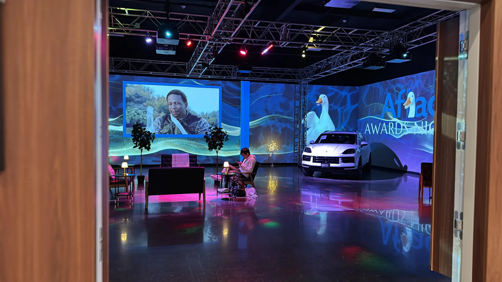
Overview
A multi-surface automotive environment built to move between immersive brand storytelling, live programming, private events, and daily studio operation without exposing the complexity underneath.
A visually seamless room still has to behave like a dependable system. Multiple display surfaces, processors, workstations, event formats, and operators needed to function as one environment while remaining flexible enough to change roles quickly.
I programmed and maintained the Pixera playback environment, coordinated routing and Datapath processing, managed mapping and content deployment, and translated the technical layer into clear operating workflows for the people running the space.
The result is an immersive studio that can shift from cinematic automotive content to partner events and live experiences while preserving image continuity, operational clarity, and the visual standards of a luxury brand.
One continuous visual field
Content crosses corners, doors, vehicles, and changing sightlines. The environment reads as a room first and a display system second.
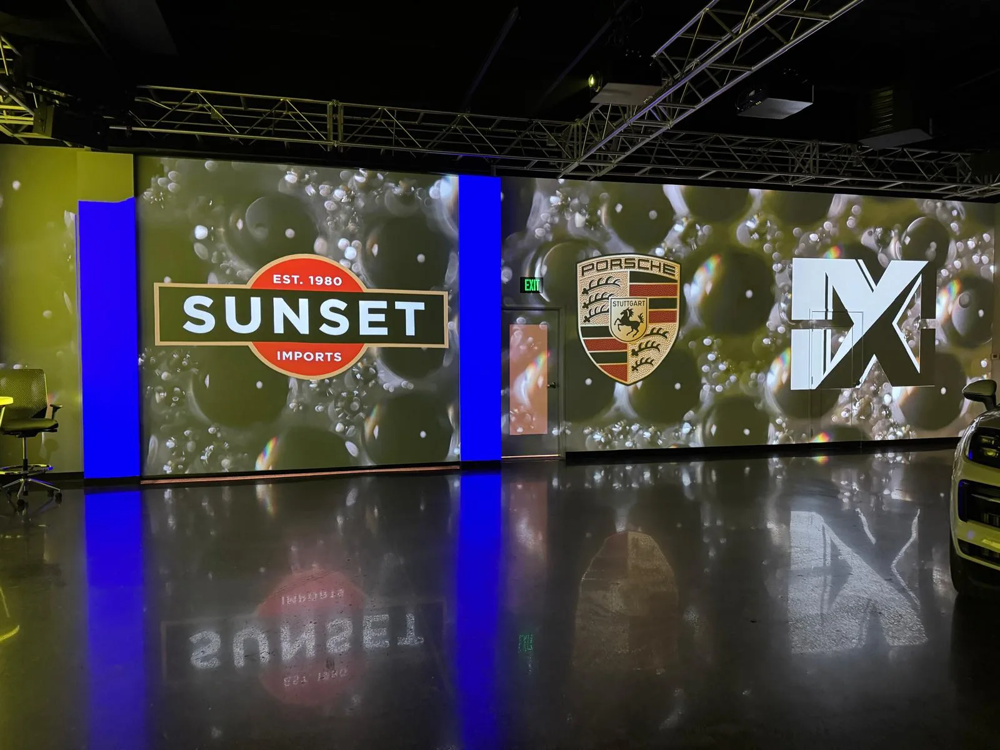
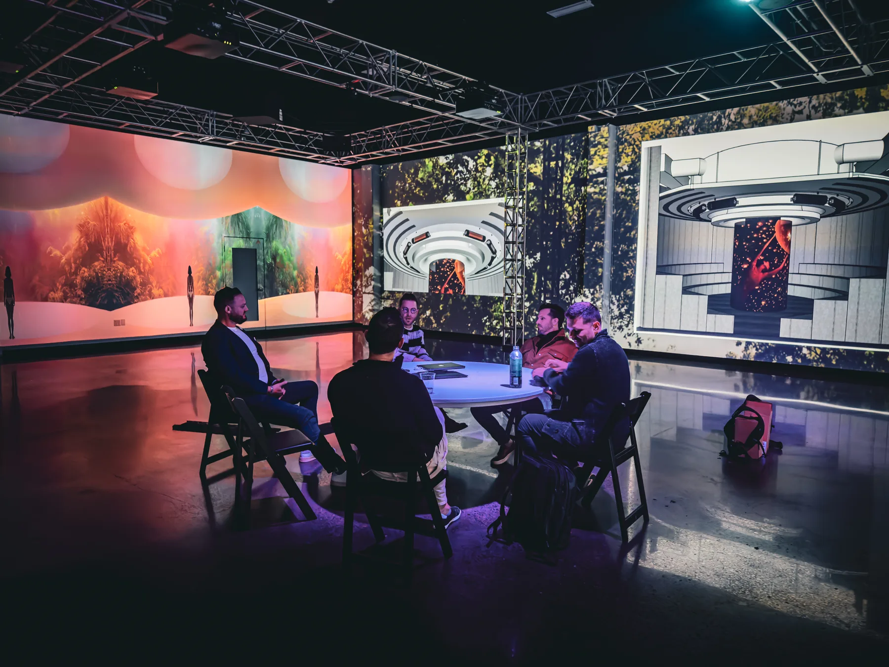
The room as a spec sheet
Partner studios deliver content straight into this rig, so the rig is documented like a product. I authored the IXC content delivery guide — canvas maps, codec requirements, naming — and partner content arrives show-ready instead of needing rescue on site.
- Respect the seams
Projector blends fall on the vertical grid lines — no fine text or logos on a seam.
- Black is still light
#000000 projects as dark grey, so content is designed for projected black — no hard white edges at the frame.
- The room must close
360° content wraps North → East → South → West — and the West edge has to meet North seamlessly.


The studio, documented
The curated record of the multi-surface environment. Click any frame to view it full size.
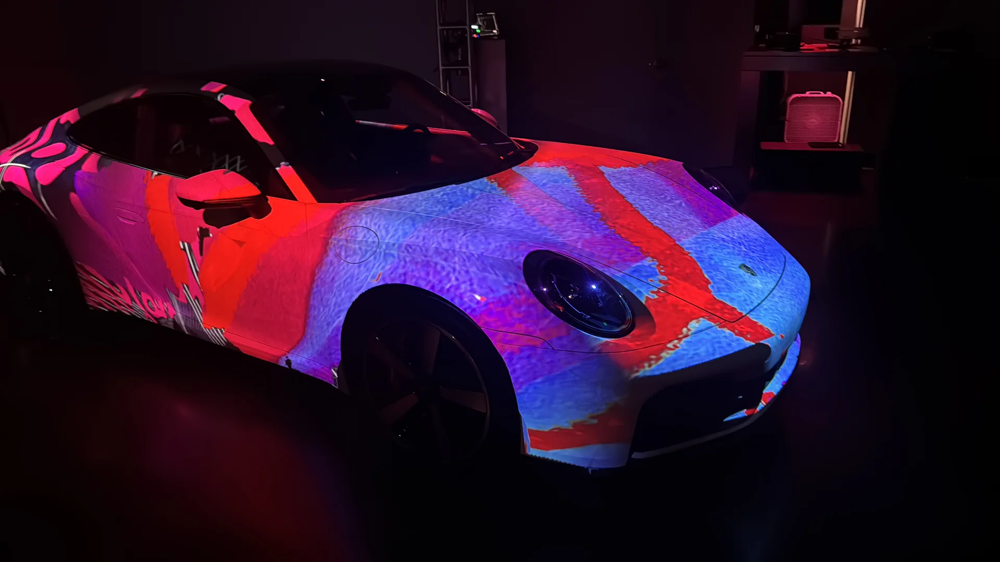
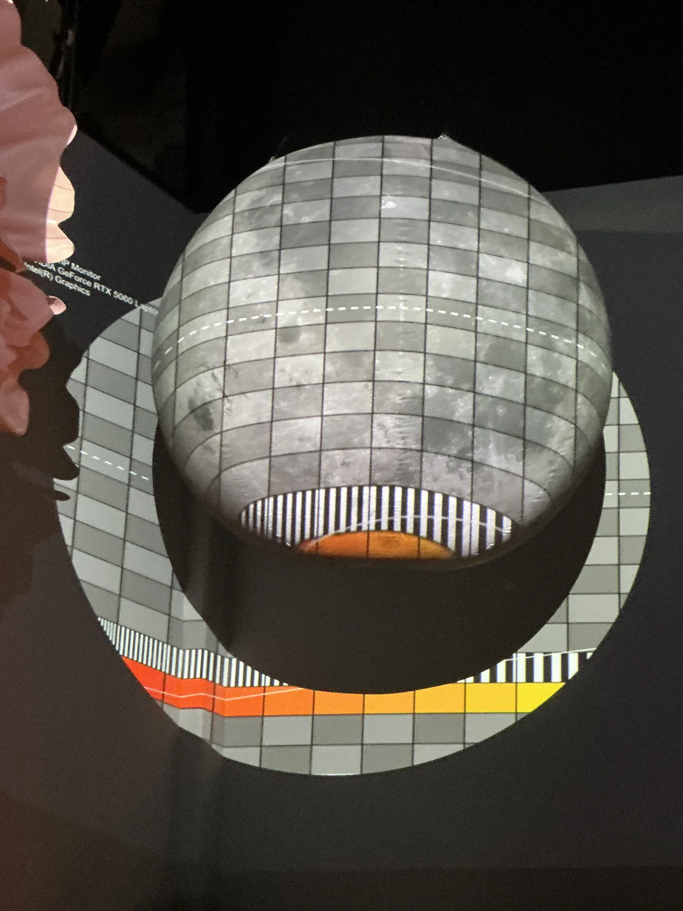
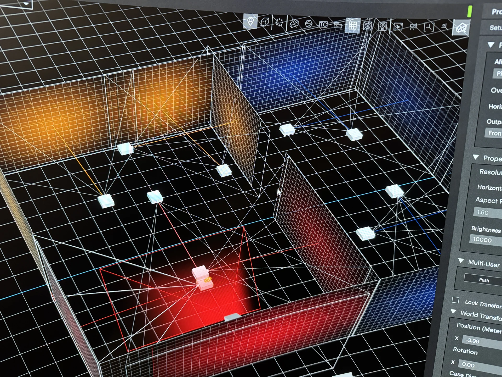
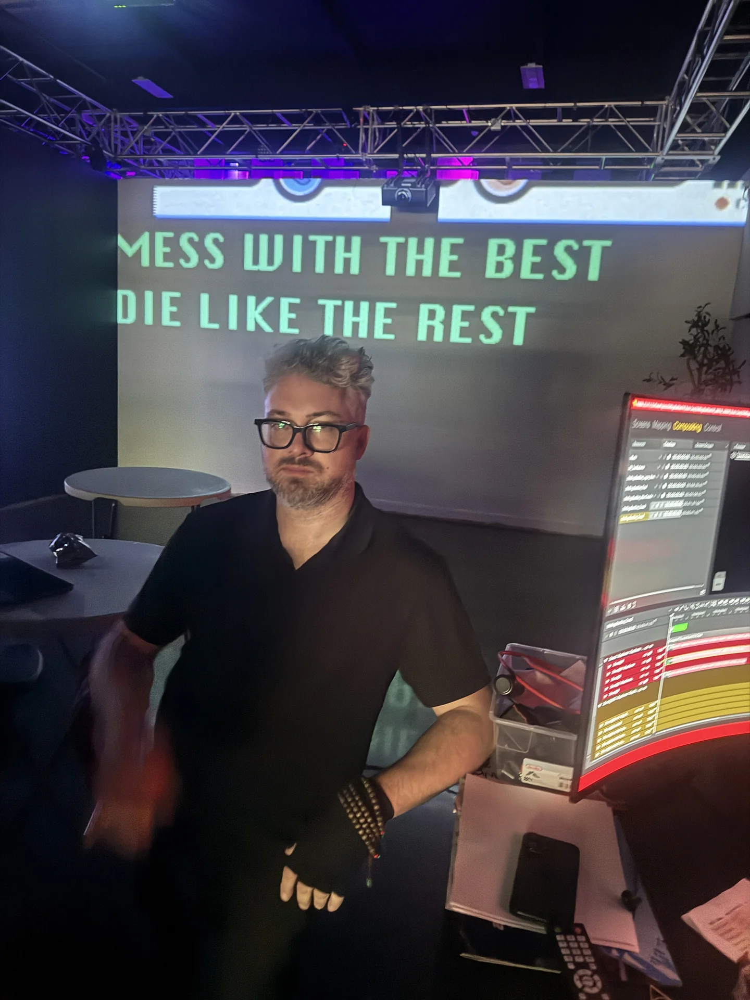
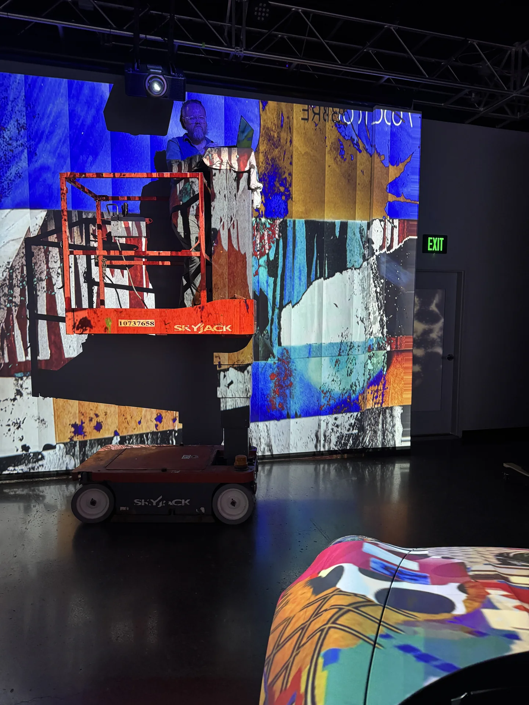
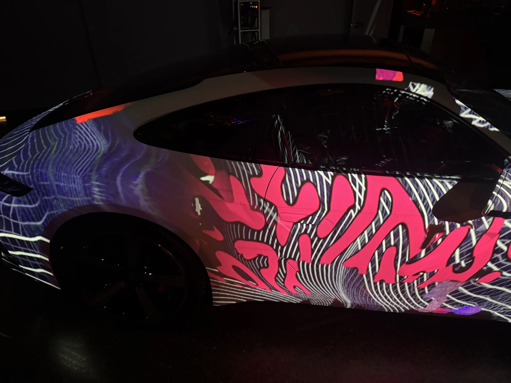
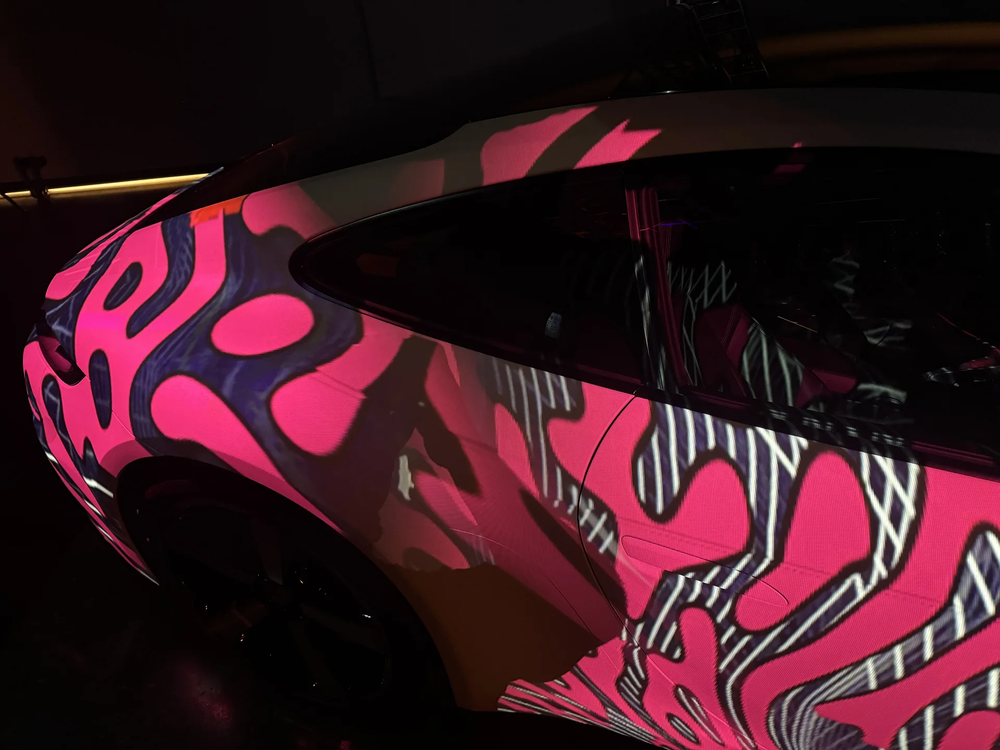
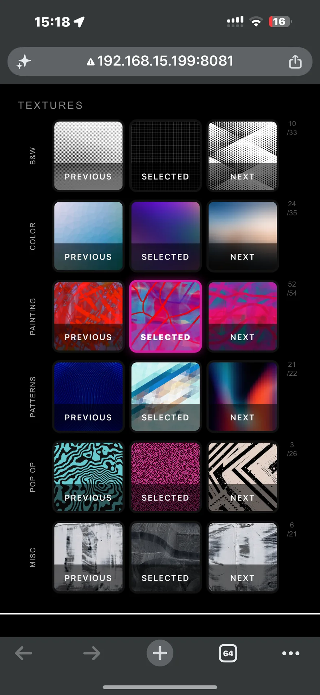